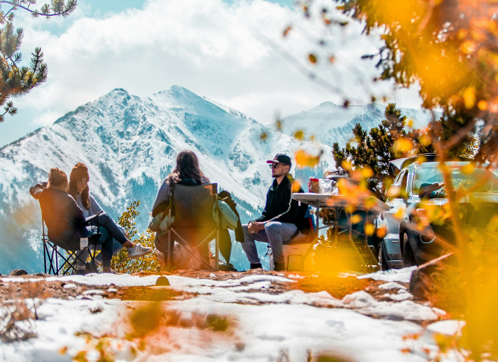

Свадьба
Первая поездка пары, детские фотографии и кадры с общими друзьями.
«Где молодожёны впервые отдыхали вместе?»
Фотоигра для ведущих
Покажите фрагмент знакомой фотографии и предложите гостям угадать, кто на ней, где это было и в каком году.
Windows macOS

Механика игры
Подготовьте фотографии и выберите тему для экрана гостей. Во время игры раскрывайте кадры постепенно, а после итогов запустите слайд-шоу с музыкой.
Свои фотографии
Подберите снимки, которые гости узнают по деталям. Начните с простого кадра, а самые неожиданные оставьте на финал.
Первая поездка пары, детские фотографии и кадры с общими друзьями.
«Где молодожёны впервые отдыхали вместе?»
Семейный архив, любимые места и фотографии юбиляра разных лет.
«Кто стоит рядом с юбиляром?»
Первые офисы, выезды команды и события, которые все помнят по-своему.
«На каком выезде был сделан этот снимок?»
Школьные поездки, капустники и узнаваемые детали из жизни класса.
«В каком классе мы ездили сюда?»
Демо-версия
В демо можно подготовить свою игру и провести первые пять фотографий. На экране гостей будет подпись «Демо-версия».
Установщик для x64
Образы DMG для двух архитектур
Подготовка ведущего
В Windows запустите установщик. На macOS выберите DMG для своего процессора: Apple Silicon или Intel. Откройте образ и перенесите приложение в «Программы». После запуска попробуйте встроенную демо-игру.
Откройте игру на ноутбуке и отсканируйте QR-код камерой телефона. Оба устройства должны быть в одной локальной сети. Можно использовать точку доступа телефона.
Получите ключ у продавца. В игре нажмите «Демо-версия — купить», введите ключ, проверьте его и подтвердите подключение компьютера. Если вам выдали файл лицензии, загрузите его в том же окне.
Для онлайн-активации нужен интернет. После активации игра работает офлайн. Пульту всё равно нужно локальное соединение с ноутбуком.
На стартовом экране экспортируйте игру, перенесите архив и импортируйте его на другом ноутбуке. Лицензию для второго компьютера подключите отдельно, если у ключа есть свободное место.